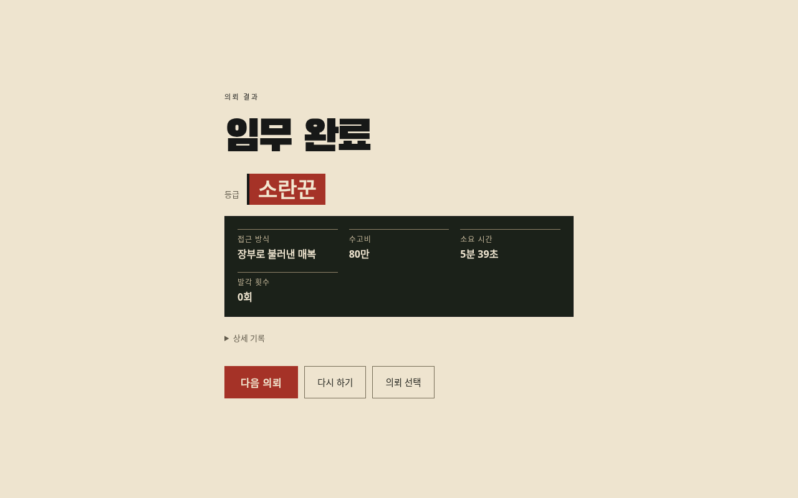
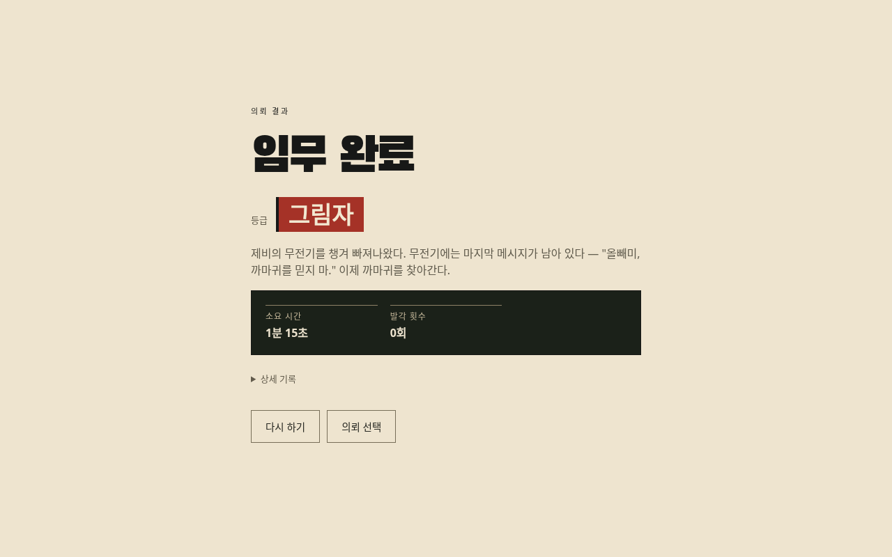
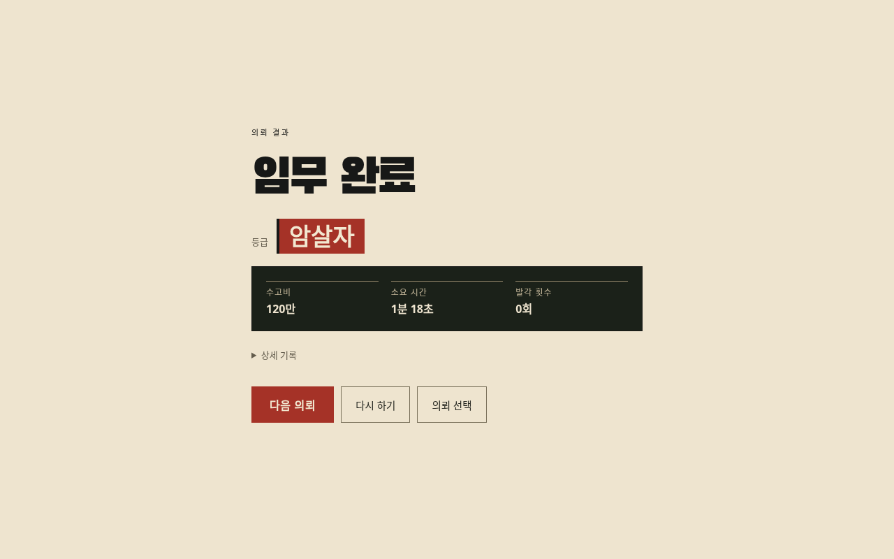

게임 실행 →전체 의뢰를 마친 뒤 고친 부분
현재 주력 의뢰 3개와 기존 의뢰 3개를 탈출까지 확인했습니다. v118에서는 숨긴 표적의 복구, 잠긴 방의 입구, 식사 유인 안내를 정리했습니다.
숨긴 사람 꺼내기
열기 → 끌어올리기 → 닫기 → 바깥에 내려놓기를 연결했습니다. 기절한 표적을 먼저 숨겼거나 옷을 갈아입기 전에 넣었어도 진행을 이어갈 수 있습니다.
수거함
사물함
동작 화면은 수납 동작을 분리한 통제 장면입니다. 아래 완료 화면의 전체 의뢰 플레이와는 구분합니다.6개 의뢰 완료 기록
아래는 수정 전 v117의 실시간 AI 상태를 시간 단위로 진행한 개발자 리뷰입니다. 이동과 행동 API로 조작했으며 지도 데이터를 경로 계획에 사용했습니다. NPC를 멈추거나 플레이어 위치·체력·아이템·완료 조건을 덮어쓰지 않았습니다. 실제 신규 유저의 평균 플레이 시간은 아닙니다.
VIP
장부로 불러낸 매복
게임 시간 5:39 · 발각 0회 · 남은 체력 3/3
대청소
출입 메모·빨간/초록 카드·금고 두 곳·실장
게임 시간 2:35 · 발각 0회 · 남은 체력 3/3배신
머리핀·간수 복장·장비 회수·CCTV 차단
게임 시간 1:15 · 발각 0회 · 남은 체력 3/3
장부 털기
직원 복장 → 장부 → 경찰 제복 → 사본
게임 시간 2:19 · 발각 0회 · 남은 체력 3/3잔칫날
문지기 제압·초록 카드·서류·회장
게임 시간 1:18 · 발각 0회 · 남은 체력 3/3
본부
조직원 복장·비밀번호 엿듣기·2층 보스
게임 시간 1:28 · 발각 2회 · 남은 체력 1/3